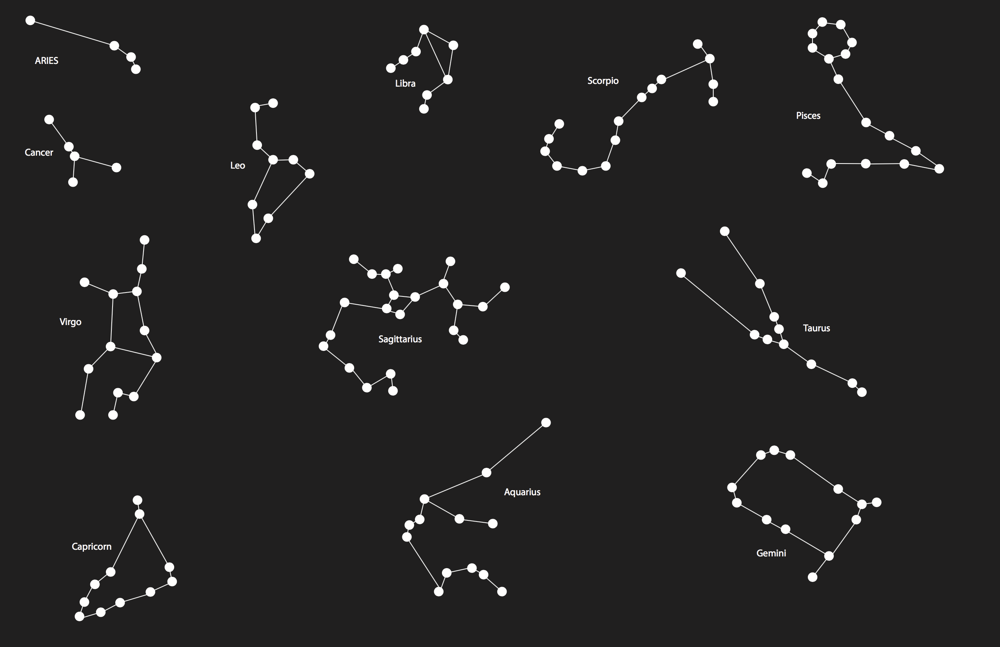
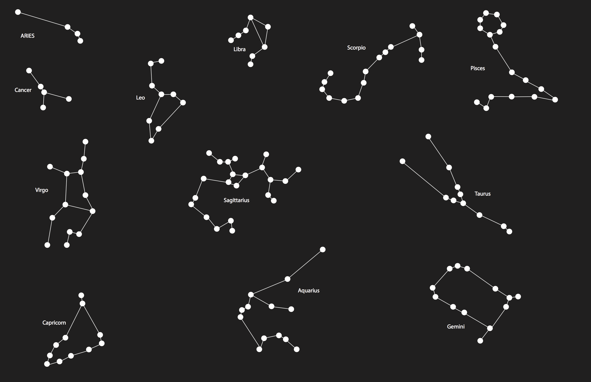

Phoebe Kennedy
Phoebe Kennedy Project
Brief description of the project. I want to make an interactive site that allows users to enter their birthday/sign and then explore the different astrological signs and their relationship to the different planets. For example, fire signs versus earth signs. Also, I want to use the star symbol that is in the sky (not the known symbols that are used daily) to represent each sign. What is your motiviation for making it? I love astrology and the stars and found a site I love that was a big part of my inspiration. I also would like to learn more about the stars and find the topic interesting. In addition it uses the methods we have learned in class (loops, click function, hover, etc) and I would like to have more experience applying them. What do you want the audience to take away from it? I want them to have fun exploring the stars and seeing the story of their sign, and others if they are interested. Ideally, they would discover at least one interesting thing about their sign / themselves from the site. What do you want them to feel, learn, or think about? I want it to feel as if they are floating with the stars and learning about the stars/planets. I want them to feel like they have a better understanding of basic astrology and enjoy exploring the different aspects of this interactive story.
Sketches
 

1. Enter birthday / sign (aries, leo, libra etc).
2. Astrological star chart shows (circle firgure) but without the labels. These are the only dots that do not follow the mouse.
3. If the user knows their star sign then they can go straight to it. If not, then they must explore the different signs in the circle.
4. When they hover basic facts about that sign will appear in the circle. For example, what kind of sign it is, ruling planet, dates, etc.
5. The user will be able to click on the sign to explore it further.
Research
Ellie Goulding Lights Inspiration